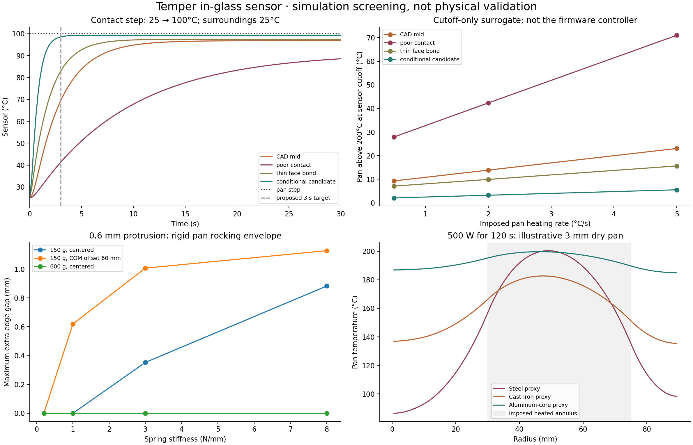
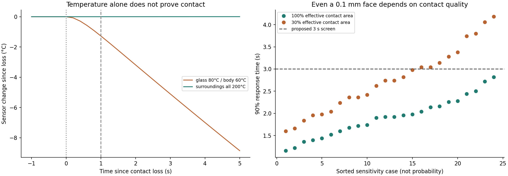
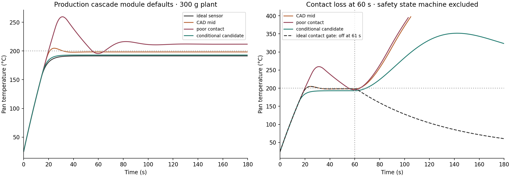

TEMPER / ENGINEERING STUDY / 04 OCT 2026
The contact probe can work.
Contact quality is the deciding constraint.
We ran the requested mechanical and transient thermal sweeps, then added a pan/glass heat-flow model and tests using the existing PID source. The results support an adjustable, instrumented cartridge prototype. They do not yet support releasing this assembly as a dependable pan-temperature control sensor.
97,200mechanical combinations
4,500thermal, candidate and coupled cases
120radial + controller runs
Sensitivity grids, not reliability statistics. CAD geometry is known; spring, seal, cookware and thermal interface properties are not measured. No hardware test was performed.

1. A 0.6 mm protrusion does not automatically rock the pan
A soft probe retracts until the pan rests on glass. A stiff spring, sticky seal, insufficient stroke or a recessed pan bottom creates a different result. The model accounts for pan weight, center-of-mass offset, spring and seal stiffness, drag, and both travel endpoints.
| Case | Computed result | Design consequence |
|---|
| 150 g flat pan, centered; net preload0.10 N, spring0.20 N/mm, drag0.05 N | 0.60 mm compression, 0.27 N tip reaction, zero additional lift. | A light spring is compatible with the nominal proud cap in this static model. |
| Same150 g pan, COM offset60 mm within a90 mm support radius | Available tip-force limit falls from1.471 N to0.490 N. | The handle and loading matter. A0.6 N total tip-force trial is already too high for this example. |
| Nominal0.6 mm cap; pan bottom recessed0.9 mm at the probe | No contact; 0.3 mm gap. | More downward travel cannot fix insufficient upward reach. Qualify cookware geometry or detect unsupported contact. |
| 1.2 mm requested compression at the tight1.05 mm stop | 0.15 mm center lift; possible0.30 mm opposite-edge gap. | Do not claim guaranteed1.2 mm travel from the existing tolerance stack. |
| Net preload0.10 N with0.40 N drag | Return is not guaranteed. | A pan can be removed and replaced while the probe remains depressed. Seal/wire drag is a functional requirement. |
These are rigid-body static results. Added coil distance is reported geometrically; no electromagnetic model translates that distance into power or efficiency. Pan flex, impact and dynamic wobble remain outside this model.
2. The current-sized cap is probably too slow under moderate contact
The thermal model separates the metal cap, bond and PT100, with heat escaping to the glass, body and leads. The following numbers are conditional simulation results, not measurements of the current cartridge. Response is90% of the sensor’s own final rise; the raw data also reports90% of the imposed pan step.
| Scenario | Response | Under-reading at100°C | Under-reading at200°C |
|---|
| CAD-sized geometry; middle assumptions | 6.59 s | 3.19°C | 5.64°C |
| Same geometry; poor contact | 21.68 s | 8.75°C | 15.25°C |
| 0.15 mm face /0.05 mm bond; middle contact | 4.25 s | 2.55°C | 4.44°C |
| Conditional candidate:0.15 mm face /0.10 mm bond; good contact, low leakage | 1.57 s | 0.73°C | 1.34°C |
| Thicker low-conductivity bond and stronger heat leakage | 11.34 s | 15.30°C | 27.25°C |
100°C case: glass/body25°C. 200°C case: glass80°C/body60°C. No calibration, electronics error or expanded measurement uncertainty is included. Proposed product screens remain ±2°C /±5°C and t90≤3 s.
The candidate is not robust across unknown contact conditions. In432 deliberately varied candidate cases,222 meet the model-only screens. This is not a pass probability. Even a0.10 mm face with a thin bond reaches4.18 s at unfavorable partial-contact corners. Full-area contact with that thin face stays below2.82 s in the selected corner set, but a thinner face introduces denting and damage questions that this thermal model cannot answer.
The favorable candidate assumes contact conductance referenced to4000 W/m²K at5 kPa, cap leakage0.0005 W/K and lead leakage0.0003 W/K. Those values must be measured. A supplier adhesive conductivity does not establish the pan-to-cap conductance.
Coupling the mechanics and thermal models tightens the conclusion. Another1,152 cases apply the actual lower static-force bound from each mechanical state to the thermal model. Within the proposed recess≤0.35 mm envelope, tip force can fall to0.09 N; the candidate then needs up to3.4 s at full contact and4.9 s at30% contact. The provisional spring/height range prevents rocking in its assumed flat-pan cases, but does not guarantee the thermal target. These coupled cases also hold pan conductivity and chip size fixed, so they are not a worst-case product bound.
3. A center probe does not measure the hottest part of every pan
A separate finite-volume study applies500 W over a30–75 mm annulus for120 seconds to an illustrative3 mm pan, with no food load. It compares a continuous glass sheet with an18 mm aperture and probe. It uses three radial meshes and a time-step refinement.
| Homogeneous conduction proxy | Pan at center | Hottest pan point | Sensor |
|---|
| Steel-like | 86.4°C | 200.4°C | 84.1°C |
| Cast-iron-like | 136.9°C | 182.7°C | 132.2°C |
| Aluminum-core-like | 186.9°C | 199.7°C | 180.1°C |
These are constructed examples, not a prediction for Temper’s unselected coil and cookware. They demonstrate that sensor calibration cannot remove an unknown spatial gradient. In the nominal steel case, inserting the aperture/probe changes center temperature by about2.6°C, while the center-to-hotspot gap is about114°C. Food, multilayer construction and the actual induction field can change both numbers substantially.
The glass model resolves lateral conduction, not glass-hole stress or surface temperature through its thickness. It cannot approve the aperture, seal temperature rating or thermal-shock life.
4. Contact loss needs an independent indication

One second after losing contact, the middle model cools by about1.28°C with cooler glass/body boundaries. With the probe and surroundings all at200°C, it changes by only about0.0005°C. An electrically healthy RTD can therefore be thermally disconnected without a reliable immediate temperature signature. Electrical open/short detection and induction pan presence do not prove cap-to-pan contact.

The unchanged production cascade module, in single-loop mode, reaches204.8°C with the middle sensor and259.6°C with poor contact in the illustrative300 g /1500 W plant. With an ideal sensor, the same default controller settles near191.4°C rather than200°C: its integral clamp and the assumed plant also affect tracking. Improving the sensor alone does not validate the controller tuning.
Some contact-loss cases reach the study’s intentional400°C stop. This is a module stress test excluding the state machine and hardware protection; it is not a prediction that the complete appliance reaches400°C. A hypothetical independent contact indication forcing zero command one second after loss prevents continued commanded heating in the corresponding simulation. No real detector or production interlock has been implemented.
Concrete hardening decisions for the next cartridge
| Change / constraint | Provisional specification | What remains to demonstrate |
|---|
| Set height at assembly | Retain adjustable0.60 mm nominal protrusion. Explore an in-service envelope0.45–0.75 mm after gauging and thermal movement. | Measure hot/cold datum movement. This is a proposed budget, not an existing tolerance guarantee. |
| Specify total tip force, not just spring rate | Illustrative envelope: net free-tip preload0.12–0.15 N, combined spring+seal stiffness≤0.30 N/mm, total opposing drag≤0.05 N. At0.75 mm compression, downstroke force≤0.425 N. | For the assumed150 g /60 mm COM case, this leaves0.065 N before the static tip limit. Measure loading/unloading curves with actual seal, wiring, temperature and soil. A different minimum pan changes the limit. |
| Retain stroke reserve and verify reach | At least0.10 mm margin beyond the largest required compression. The tight1.05 mm existing stroke leaves0.30 mm beyond a0.75 mm flat-pan compression, but only0.10 mm with a0.20 mm local dimple. | With minimum height0.45 mm and a0.10 mm desired compression reserve, the guaranteed local recess is only≤0.35 mm. Define the actual cookware envelope. |
| Reduce cap thermal mass carefully | Build interchangeable0.35 and0.15 mm roof samples first; retain0.10 mm as a thermal-performance exploration. | Denting, cap deflection, scratch/cleaning damage, material/finish, lateral heat spreading and induction heating. Do not adopt the thinnest thermal winner without mechanical tests. |
| Control bond and lead losses | Prototype measured0.075–0.10 mm bondlines with a verified insulating material; locate RTD under the contact face; document fillets and lead anchoring. | Hot/wet dielectric integrity, cure/voids, strain, continuous-use rating and aging. H70E is a conductivity reference, not an approved250°C adhesive. |
| Fix part identity before detail release | Select actual RTD, spring, cap, plunger, guide, seals and wire construction; recheck the complete stack. | The example M222 is nominally0.9 mm thick versus the CAD’s0.4 mm. The existing clearance also permits angular play; flat cap-to-pan contact cannot be assumed from a collision pass. |
| Make contact observable | Prototype position/force sensing with diagnostics. Require valid contact before issuing temperature-mode heat commands; inhibit on loss or uncertainty. | Debris or a sticking plunger can fool position alone. Verify observability, sensor faults and end-to-end cutoff timing with pan presence still true. |
| Qualify temperature meaning | Calibrate the installed cartridge locally and measure center-to-hotspot differences for supported cookware. | Do not label a local center reading as whole-pan temperature. Tune control only after identifying the real plant and sensor dynamics. |
The next physical measurements are now narrowly defined
- Mechanical fixture: measure cap height, stroke and complete loading/unloading force curves at cold and intended hot conditions; repeat after wiping and contamination. Use the smallest supported empty pan, eccentric handle load and measured pan-bottom recesses. Record rocking and actual pan-to-coil distance.
- Field-free thermal coupon: instrument pan immediately beside/above the contact and the cap, glass rim and body. Record a reference transition of at least20°C, slow/fast ramps, steady points40–250°C within selected material ratings, and cooling. Fit contact/loss parameters on some runs; validate on different runs and pan materials.
- Actual induction comparison: compare coil-off and coil-on response, including parasitic cap heating, lead/ADC interference and the hottest region of the pan. Do not place the conductive bench fixture from the earlier CAD package over an energized coil without its own integration review.
- Fault/endurance fixture: deliberately separate cap contact while the pan remains inductively present; test stuck-up/down, debris, a healthy-but-cold RTD, open/short leads and failed contact indication. Repeat thermal and force screens after the existing proposed1000-cycle cleaning/actuation screen; that is not lifetime qualification.
Owners: mechanical engineering for force, retention and aperture/seal; thermal/materials engineering for cap/bond and validation; controls engineering for contact observability, the control contract and end-to-end tests. The exact test temperatures depend on the selected assembly ratings, not the generic sensor-element rating.
Evidence and reproducibility
14 numerical tests,25 existing cascade tests and4 existing liquid-probe tests passed. Mesh refinement changed the monitored radial temperatures by at most0.153°C; time refinement by at most0.010°C. Energy balance closed below1e−7 J. These numerical checks do not bound the much larger uncertainty in contact, cookware or material choices.
Equations, complete assumptions, sources and limitations · Machine-readable summary · Thermal comparisons · Candidate corners · Coupled mechanics/thermal cases · Controller cases · Pan/glass cases · Input hashes
Material references checked against primary sources: SCHOTT CERAN, YAGEO M222, EPO-TEK H70E. Supplier data has not been promoted into a Temper performance or safety approval.